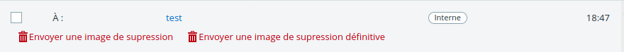
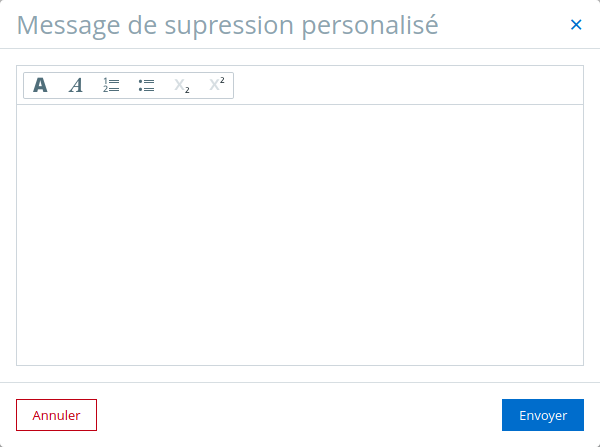

Pour commencer, il faut se rendre dans votre messagerie. Dès ce moment là, vous constaterez que deux nouveaux boutons sont apparus sur chaque message:

Le premier boutton a pour but de palcer le message dans la corbeille, la supression n'est pas définitive.
Le second button lui, suprimme définitivement la conversation.
⚠️ Cette action est irréversible !
Par défault, le contenu du message vous sera demandé par la boite de dialogue suivate:
Vous pouvez aussi ne pas mettre de message ou mettre un message par défault qui sera envoyé a chaque fois.
Une nouvelle boite de dialogue a été ajoutée au navigateur:
Les options de haut en bas:
Met la boite de dialogue en mode sombre.
Cache les bontons suplémentaires sur la page messagerie de l'ent.
J'ai développé cette application pour le fun et pour l'expérience. Une utilisation frauduleuse de celle ci n'est en aucun cas de ma responssabilité. Si vous faites n'importe quoi avec ce n'est en aucun cas de ma faute. Faites attention a ce que vous faites en pensez au autres utilisateurs.